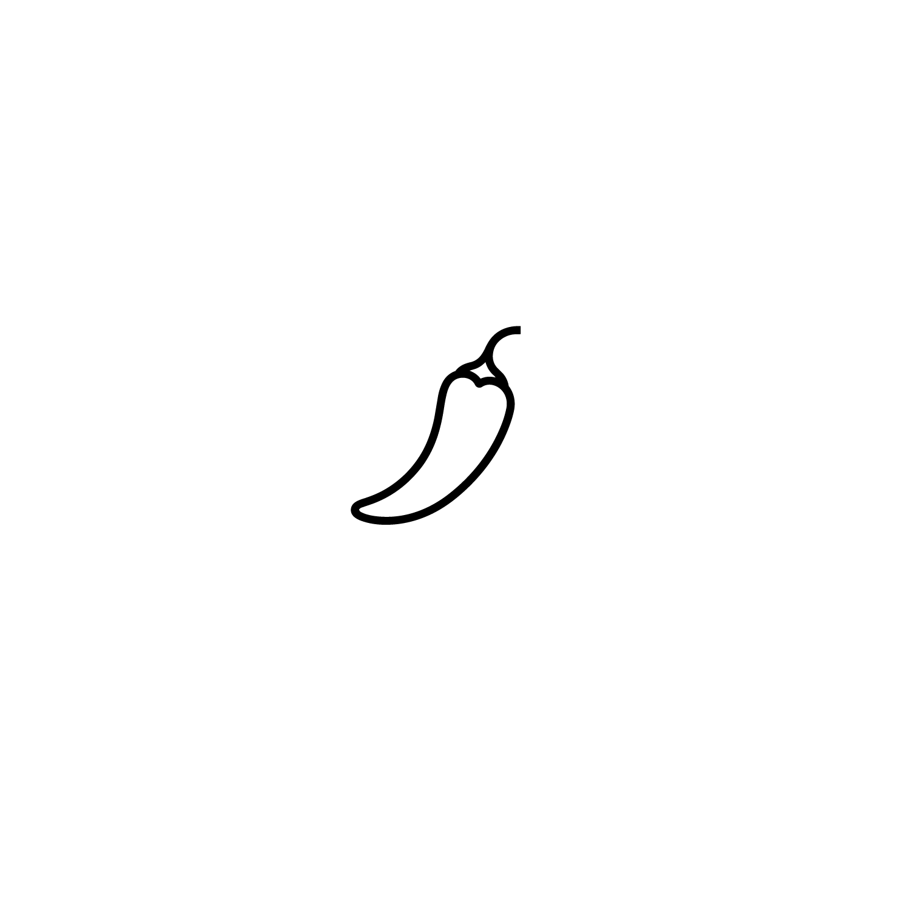

IL FORNAIO'S
TAKE
This dish was good, but it definitely didn't wow me. Despite the generous portion size, it was lacking in overall flavor. There was a noticeable bitterness from the vodka, and the pasta was overcooked. The spice was definitely dominant here. That said, it was a pleasant heat that added some enjoyment to an otherwise underwhelming plate.
